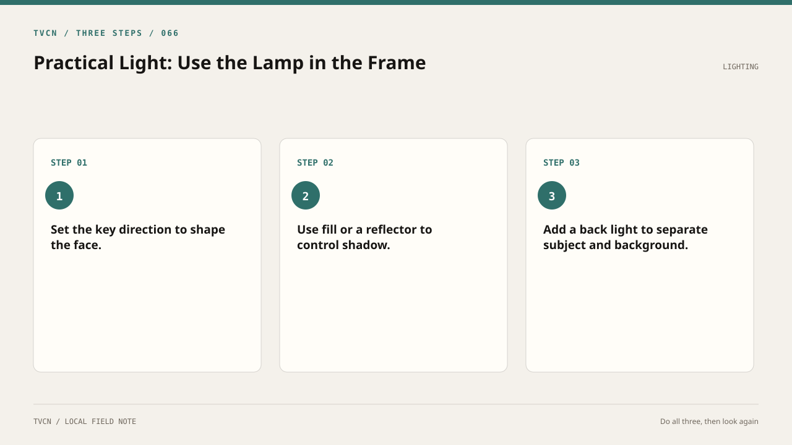

Practicals must be believable and controllable
Lamps, windows and neon can be in frame, but confirm color, output and flicker. Swap bulbs for adjustable temperature, add diffusion or dimmers; do not let a practical blow out the face.
Check flicker with phone slow motion; rolling bands mean change the lamp or shutter.
Limits
A practical is not a key light. It motivates and fills the background; the face still needs separate fill, or shadows go muddy.
On set
Let the lamp in frame actually glow, but dim it to 20 or 30 percent. Light the face with a separate small source; do not treat the practical as the key.
Three-step flow

Do this
A practical must really be on, off, or flicker, but it is motivation, not a key light. The face needs a separate small source.
- Keep the practical visibly on but dim it to 20 or 30 percent.
- Light the face with a separate small lamp; the practical motivates the background.
- Check that the bulb does not clip and does not light the whole room.
Avoid
Do not make the visible bulb the only key; it cannot light the face and will clip.
Image note. Covers, diagrams and step images on this page are editorial illustrations or structure diagrams, not photographs of a test performed here; they are not evidence of measured gear performance. Where an image is AI-assisted, the caption says so. Read the test conditions in the text before treating an image as proof.